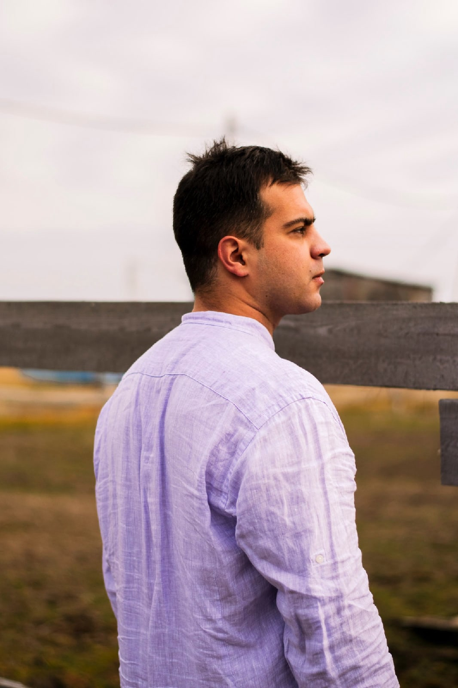

Очные консультации
Северодвинск
Уютный кабинет для личной встречи и доверительного разговора.
Помогаю разобраться в сложных переживаниях, отношениях, тревожности, самооценке и жизненных смыслах.

Здравствуйте, меня зовут Чилкин Валерий Николаевич. Я практикующий психолог.
Интерес к практической психологии появился ещё во время обучения в университете, а с 2009 года я начал активно изучать различные психологические и психотерапевтические методы.
В профессии с 2013 года. После окончания университета 7,5 лет проработал психологом в социально-реабилитационном центре для несовершеннолетних.
Также 6 лет являлся консультантом Детского телефона доверия. Сейчас продолжаю консультативную и тренинговую деятельность.
Северодвинск
Уютный кабинет для личной встречи и доверительного разговора.
Любой удобный для вас мессенджер. Встречаемся онлайн из любой точки мира.
Напишите мне в личные сообщения во ВКонтакте.
Регулярно прохожу обучение, участвую в семинарах, тренингах и программах повышения квалификации.
Если вы готовы уделить себе время и направить внимание на то, что происходит в вашей жизни, буду рад встрече.
Записаться